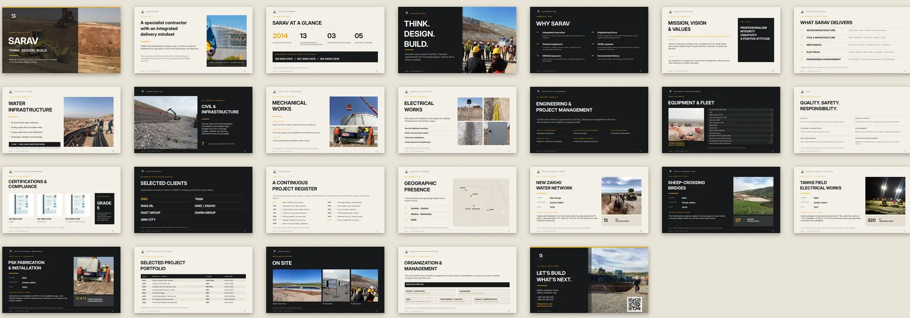
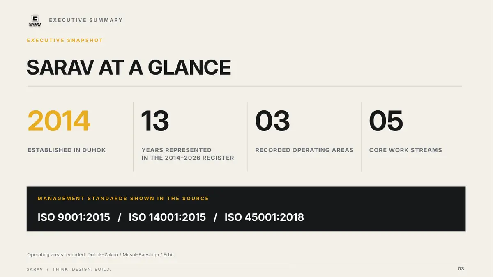
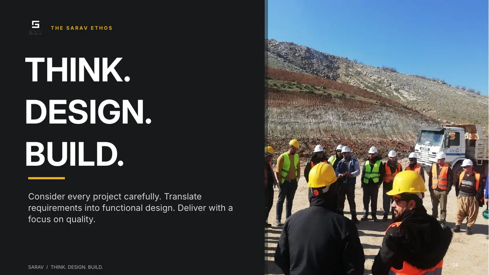

ملف شركة / عرض تقديمي
SARAV: ملف شركة
بألوان الموقع.
- العميل
- SARAV — مقاولات عامة، دهوك
- القطعة
- ملف الشركة 2026، 26 شريحة 16:9
- اللغة
- إنجليزي
- دوري
- إعادة تصميم الملف كاملًا

01
نظرة عامة على المشروع
SARAV شركة مقاولات في دهوك تأسست عام 2014، تعمل في البنية التحتية للمياه والأعمال المدنية والكهربائية والميكانيكية.
02
التحدي التصميمي
ملف الشركة يقرؤه عميل أو جهة مناقصات، ولازم يقنعه بسرعة إن الشركة عندها خبرة وأدوات ومشاريع منفّذة — بدون ما يضيع بين التفاصيل.
03
النهج التصميمي
- ألوان من الموقع نفسه: فحمي غامق، بيج رملي، وأصفر كهرماني بلون الآليات للخطوط والأرقام والإشارات.
- إيقاع فاتح وغامق: الشرائح تتناوب بين البيج والفحمي، فكل قسم جديد يبان من تغيّر الخلفية.
- شعار بثلاث كلمات: THINK. DESIGN. BUILD. بخط ضخم على ثلاثة أسطر، يرجع على الغلاف وفي شريحة كاملة لوحده.
- الأرقام أولًا: شريحة «لمحة» بأرقام كبيرة — سنة التأسيس وسنوات السجلّ ومناطق العمل ومجالاته — وشهادات ISO في شريط واحد.
- دراسات مشاريع بقالب واحد: العميل والموقع والسنة، ثم نطاق العمل، ثم صورة ورقم بارز. القارئ يقارن بين المشاريع بسهولة.
- صور الموقع بنصف الشريحة: حفريات وأنابيب وفرق عمل، بحجم كبير بجانب النص.
- خط واحد بأوزان: Inter لكل الملف، والعناوين بأحرف كبيرة، مع سطر تصنيف صغير وترقيم ثابت على كل شريحة.
04
المخرجات النهائية
- ملف الشركة 202626 شريحة، 16:9، بالإنجليزية — إعادة تصميم كاملة
05
معرض المشروع





ملف شركتك يحتاج إعادة تصميم؟
أرسل الملف الحالي أو المعلومات والصور، وعدد الصفحات المطلوب.